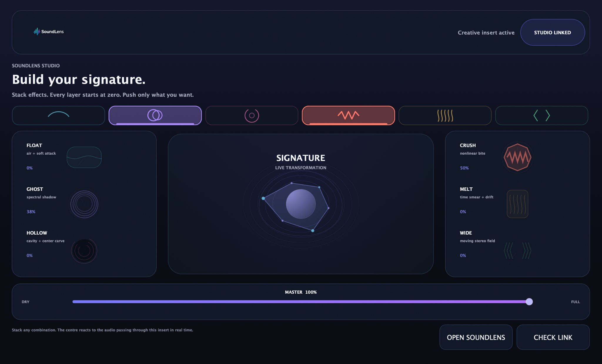
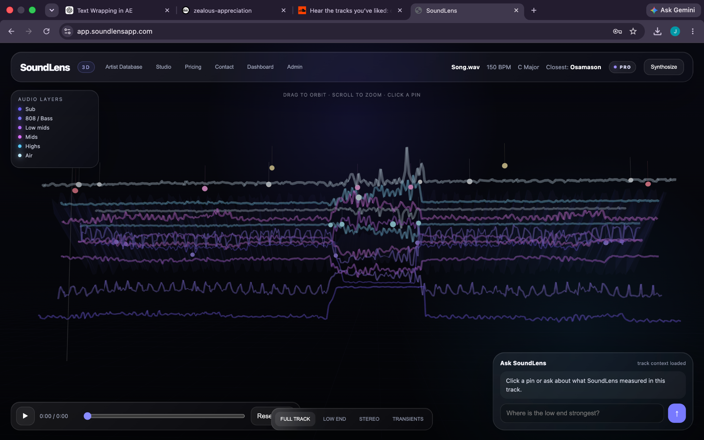
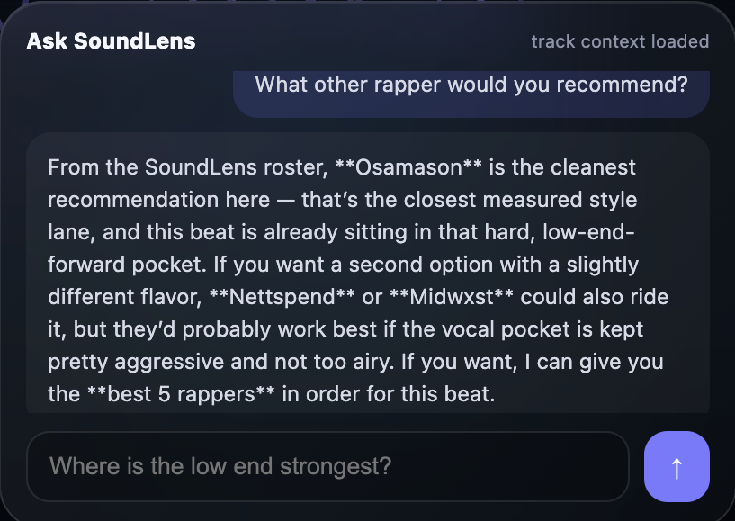

SOUNDLENS STUDIO
Build your signature.
Stack six character engines directly on an insert. Float, Ghost, Hollow, Crush, Melt and Wide reshape the audio in real time.

Analyze your track in 3D, ask SoundLens what it hears, then shape the sound inside your DAW.
Stack six character engines directly on an insert. Float, Ghost, Hollow, Crush, Melt and Wide reshape the audio in real time.

Explore your song as a 3D audio map, inspect important moments, compare artist references and ask AI questions using the track itself as context.

See how the track changes over time.
Find your closest underground artists.
Transform the sound inside your DAW.
Ask questions grounded in your analysis.
SoundLens connects the work happening inside the DAW with deeper analysis, saved reports and artist context outside it.
SoundLens Studio is the creative side of the system: six stackable character engines that reshape the insert in real time without taking you out of the session.
Move through the 3D analysis, click important moments, inspect stereo and frequency behavior, and use the full report to understand what is happening across the song.
SoundLens AI uses the analysis and artist context already loaded for the song, so you can ask about mix decisions, artist fit, low end, stereo moments and what to try next.

Your analyzer, reports, linked plugin and future SoundLens products live under the same account.